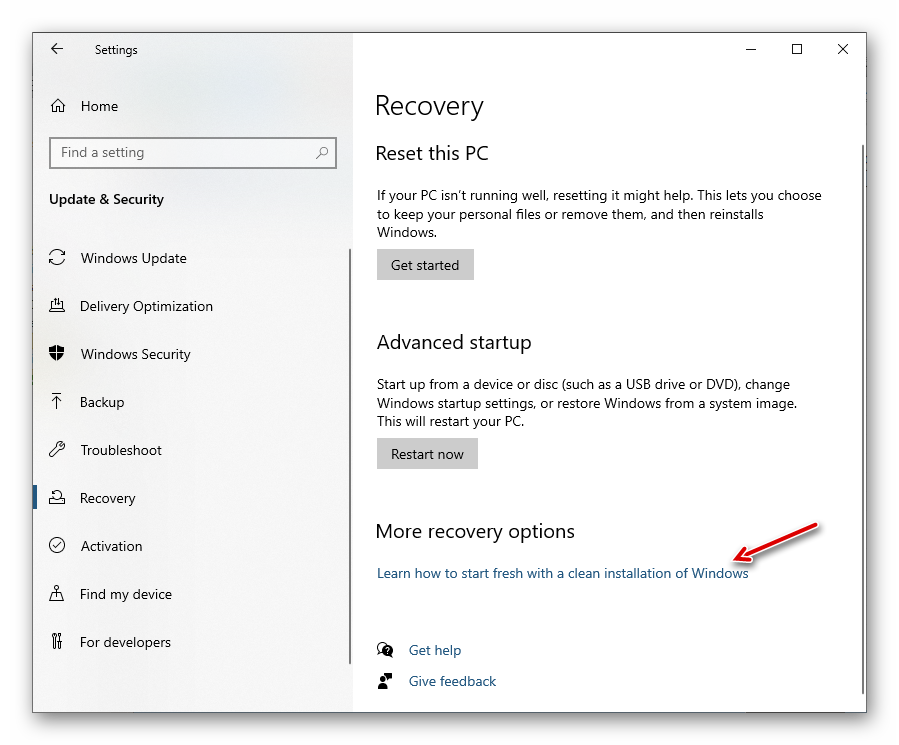
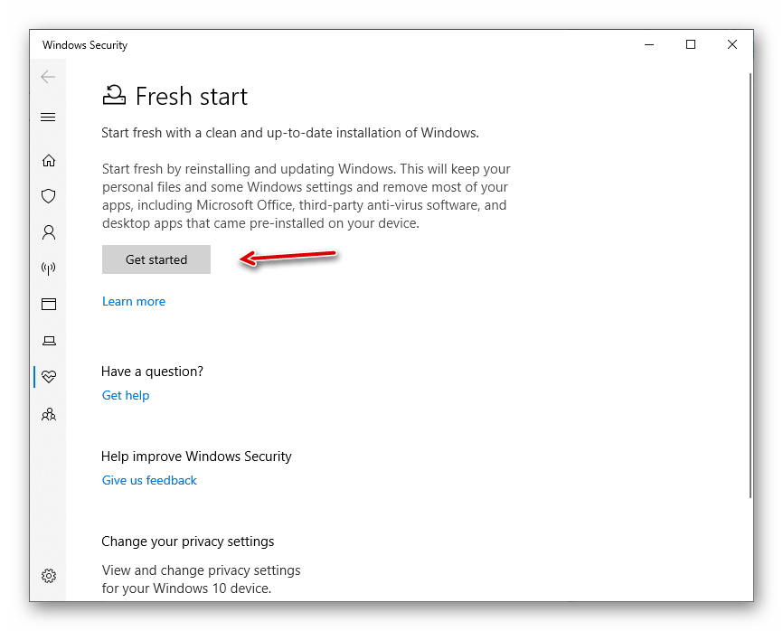

明智地使用 Windows
# 离不开的 Windows
Windows 10 操作系统，是美国Microsoft（微软）公司所研发的新一代跨平台及设备应用的图形界面操作系统。于2015年7月29日正式发布，至今已经日趋完善。
Windows 7 已于2020年1月14日正式结束官方支持，这意味着微软不会再为其提供任何技术服务，也不会发放任何补丁，Windows 7 已经寿终正寝。若您还想停留在 Windows 的桌面世界里，使用 Windows 10 是明智的选择。个人认为，这并不是一件坏事。作为普通用户，我从 Windows 10发布以来，一直使用至今，对 Windows 10 的使用体验还是很满意的。
为什么离不开 Windows？究其原因，主要有：
Windows 占桌面市场的份额一直是主导地位。在下面的统计中，2020年的占比是77.7%，后面紧跟的是 Apple 的 MacOS。
Windows 的 Office 办公套件，功能强大。因市场普及度的原因，文件格式的兼容性是刚需。
Windows 生态系统中有丰富的软件，包括众多商业软件、免费软件等。只有想不到，没有找不到的。
几乎全部的第三方软件/硬件厂商、都提供了 Windows 操作系统的支持，毕竟，没有人会刻意忽略处于市场领导地位的操作系统。
虽然用户也会不时抱怨 Windows，特别是微软改变用户使用习惯的时候（例如开始菜单），但大部分用户并没有选择“逃离” Windows，于是只能去适应。
# 定制我的 Windows
面对一个全新安装的 Windows 10 操作系统，我通常会做如下定制：
- 开始菜单。最受用户诟病的非“开始菜单”莫属，但我们并非没有办法，您可以安装一个开源免费的软件 OpenShell，熟悉的”开始“菜单又回来了！它的前身是Classic Shell，因作者在2017年底停止开发，将代码开源，于是成了现在的OpenShell。
- 压缩软件。7-zip 是开源免费的压缩软件，它界面简洁，稳定高效。我找不到任何理由不用它。
- 资源管理器软件。 Q-Dir 是一款免费软件，也是我目前主力使用的资源管理器软件。默认它打开4个窗口（Quad-Directory-Explorer），但我通常只使用一个。FreeCommander 是另一个免费的选择。还有些用户喜欢 Total Commander，它是商业软件，可以免费试用。
- 文本编辑器软件。我喜欢用 Notepad2-mod 替代 Windows 自带的写字板（Notepad）。我还会安装 Notepad++ ，这是一款开源免费的文本编辑器软件，功能强大，是处理纯文本文件的“瑞士军刀”。
您当然有其它的选择，但上述是我的偏好，仅供参考而已。
另外，下面是我坚决不做的：
- 我不会安装第三方的杀毒软件，因为 Windows 自带的免费杀毒软件已经够用了。虽然有时会发现它扫描过于频繁，占用过多系统资源，但总体而言，还算不错。
- 我不会安装第三方中文输入法，微软的拼音输入法确实不大好用，有时还让人生气，但目前也没有找到更优的选择。谷歌拼音输入法本来挺好用，可惜它年代久远，还是算了吧。
- 我绝不安装国产软件，尤其是”3xx安全“，”管家“，”输入法“之类，它们会要求管理员权限，然后在你不知情（或者诱导）的情况下，安装全家桶，把你的电脑变成它的广告平台，弹出各种窗口，还卸载不干净。简直不胜其烦。
对于国产软件，我个人的看法或许是有点偏颇，未必全部的国产软件都这么流氓，只不过市面上大多数国产软件都是这样无底线，包括BAT系或某山等大厂都是如此（免费后面是看不见的代价）。为了安全起见，还是选择远离为好。
国内的网站也建议远离，别去上面下载软件。很多网站（特别是有破解版的）都有诱导下载的广告，你甚至分不清到底哪个链接才是下载你本来想要下载的东西，极可能下载来的就是一个木马，连专业人士不小心也会中招。
# 重新安装 Windows
Windows 有一个很贴心的功能，可以不需要通过其它介质来重新安装 Windows 操作系统。在重置（Reset this PC）无效的情况下，您可以考虑此功能来重新安装一个“干净”的 Windows。
注意： 此操作有风险，请谨慎操作！执行操作前，请务必做好数据备份，特别是 C 盘的数据。一旦操作开始执行，C 盘的数据就再不能挽回了。

在设置菜单中，点击上图中的文字链接。
进入到 ”Windows Security“，按”Get started“按钮，它将会把 Windows 10 恢复到一个全新的状态。删除全部已安装的应用程序，删除全部的驱动程序，删除全部的个人用户数据。

请耐心等待，操作完成后，您将获得一个“干净”的 Windows 10 操作系统。
# 用户和权限
面对一个全新的 Windows 10 操作系统，我通常会创建2个本地用户：
第一个用户名为”admin“，它是系统管理员的组成员，设置好密码。我通常只会用它来做系统级的设置，安装/删除软件，做系统级别的维护（如清理垃圾文件）等。
第二个用户是一个本地普通用户，它属于普通用户组成员，只拥有受限的权限（不能安装/删除软件，不能管理此电脑，只能修改用户相关的少数设置）。然后，登录到此用户，切换用微软的 Outlook 账号登录，设置好 PIN 用于登录。
平常工作中，基本上只用第2个普通用户登录使用电脑，从而保证操作系统的稳定性。即便碰到不良软件，它也没有足够的权限对系统造成破坏。
我已经有一段时间没有全新安装 Windows 了，现在的新的 Windows 10 安装程序是否如下博文所述，在检查到有网络的情况下，会禁用“创建本地用户”的选项呢？若真有此事，可以拔掉网线，停用WIFI来创建第一个本地管理员账号（如上“admin”用户）。
# 软件的安装
Windows 应用商店（Windows Store）里已经有很丰富的软件可供选择，有免费也有收费的。但必须登录微软的账号才能下载和使用。
对于传统（需要执行安装程序）的软件，您可以选择免费软件，在 Gizmo's Freeware 网站上搜索并选择编辑推荐的免费软件；或者找到限时免费的正版商业软件：
- 流动日报 - 限時免費情報，经常有 iOS App 和 Steam / Epic 平台的游戏大作限免。
- 反斗限免，国内的一个限免搜集网站。
- SharewareOnSale，经常有大牌的商业软件限免。
注意： 尽量不要安装国产软件！总会找到替代品的，除非别无选择。虽然这有点偏颇，但却是比较稳妥的选择。国产软件当然也有例外，例如 XMind，初看以为是国外的软件，但实际上是开发团队位于深圳的国产软件。而且，它是有口碑的，可以信赖的软件。
对于您要安装的软件，如果不知名，可先在互联网上搜索此软件的评价，对于有负面评价的软件，如有捆绑，有流氓行为等，要特别谨慎。
其次，还需要注意：
- 从软件厂商的官方网站下载软件（注意必须是 HTTPS 的网站才可信），下载后核对 MD5/SHA-1 等文件哈希值，确保下载的软件包没有被偷梁换柱。
- 推荐选择开源的软件。代码全部开源，就像是”君子坦荡荡“，无法隐藏任何”见不得人“的逻辑，甚至包括嵌入播放广告的代码。开源作者，一般都是比较有情怀的，不屑于做这种事情，毁了自己的声誉。
- 优先选择不需要管理员权限，不需要安装的（portable）软件，解压缩即可使用。这通常意味着软件不需要访问或修改注册表，可以在普通用户权限上运行；另外，卸载也方便，直接删除文件夹即可卸载干净。
- 在安装过程中稍加谨慎，特别注意点击“同意/下一步”按钮时的提示文字，以免安装不需要的捆绑软件。
安装前，若有必要测试一下的话，可以在虚拟机或其它不重要的机器上安装试用无误后，再安装到主力电脑中。
# 小结
以上是我使用 Windows 10 的一些心得体会，它能让我在至少3年内不需要重新安装 Windows 操作系统，摆脱了隔一段时间就要重新安装 Windows 操作系统的魔咒。
非工作的情况下，我也尝试使用 Linux Mint，并且非常喜欢其 Xfce 发行版。它简洁高效，使用体验好得让人惊叹。只不过，因软件生态的原因，它还不足以取代我的 Windows 10 主力电脑。